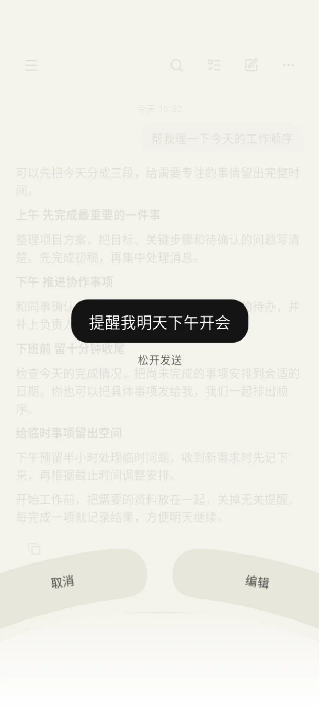
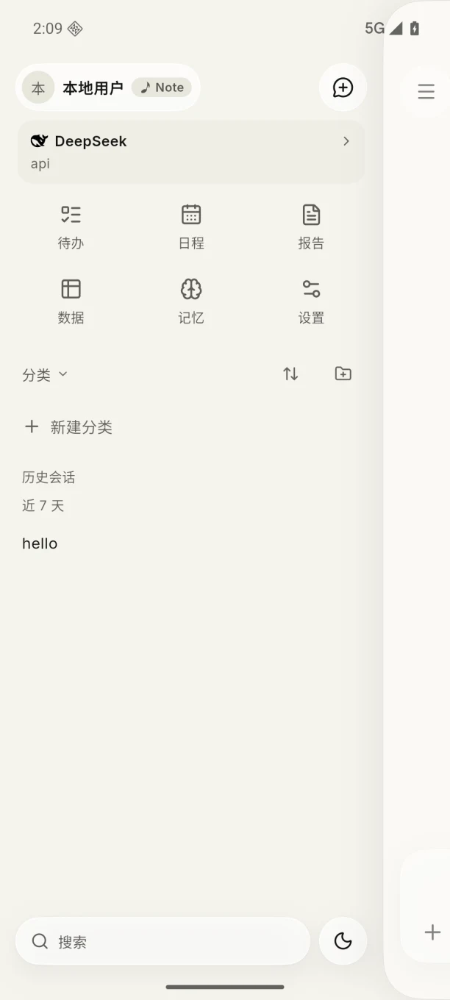
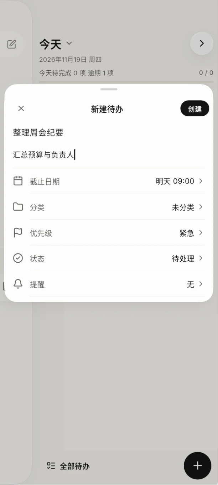
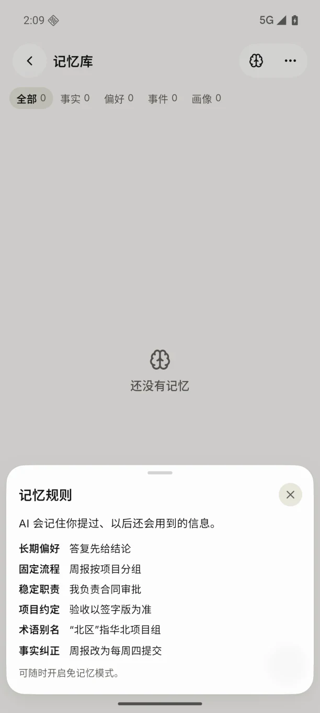

语音输入
长按说话，本机实时转写。松手发送，滑向两侧可以取消或编辑。

待办、日程、报告、数据、记忆与设置，从侧栏直达。

长按说话，本机实时转写。松手发送，滑向两侧可以取消或编辑。

在对话里勾选今日清单，或在日程里为任务设定截止时间、优先级和提醒。

AI 会判断哪些偏好、流程和项目约定值得保留。你可以随时查看、修改或暂停记忆。
基础包与应用内补丁的公开发布记录。
正在读取版本日志。
Mac 版打开 DMG 后拖入「应用程序」。
Android 用户可在「设置 → 检查更新」获取补丁。
本地工作区免费使用，无需注册 ToWork 账号。使用 AI 时，在设置里连接自己的模型账户，费用按供应商的 API 或 Plan 规则计算。
待办、表格、记忆和聊天记录保存在本机。离线语音在本机转写。使用在线 AI 时，相关对话和上下文会发送给你配置的模型服务商。
在设置中导出备份，在新设备上恢复。模型密钥保存在系统安全存储中，换机后需重新填写。
首次安装 APK 时，按系统提示允许当前浏览器或文件管理器安装应用。主应用启动时会检查更新。兼容的代码补丁下载后重启生效，基础包升级按系统提示确认安装。